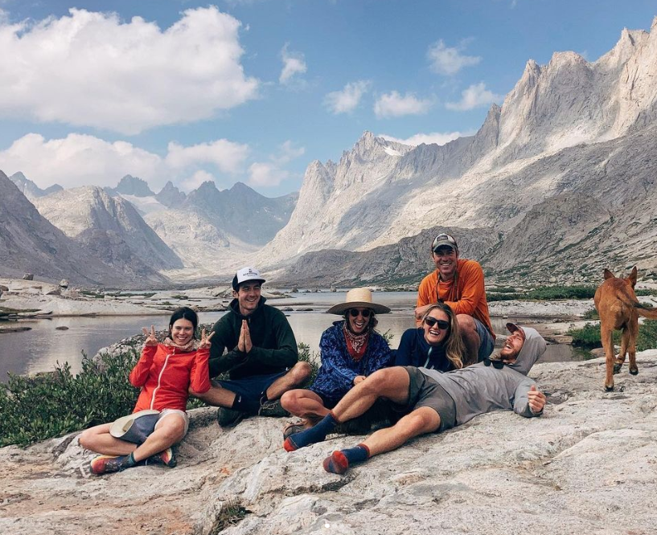
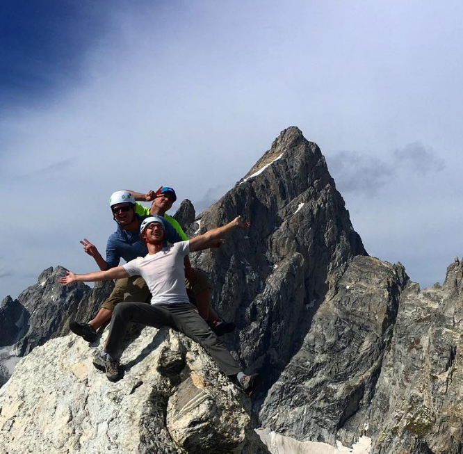
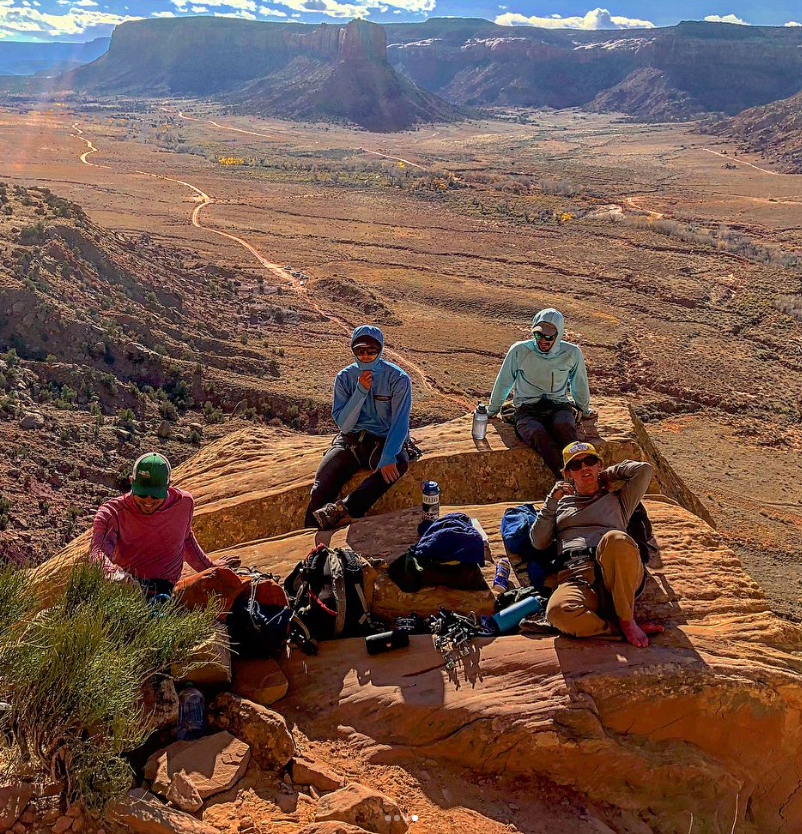
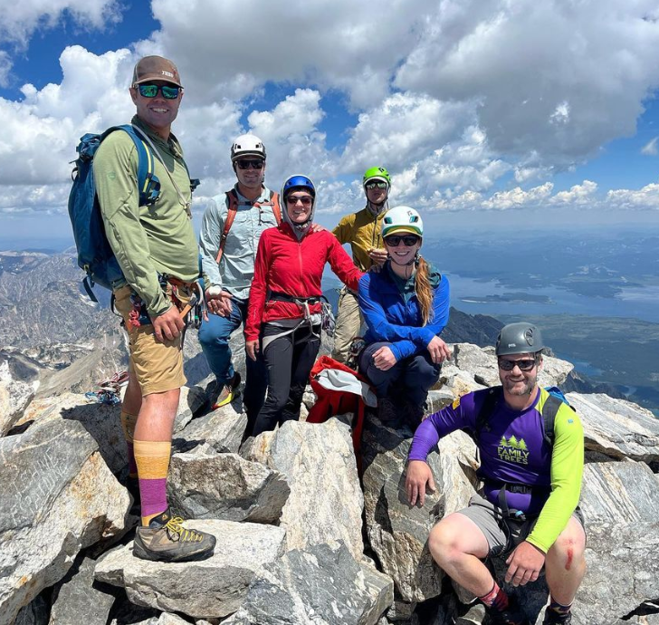

Rock Climbing: A Journey of Connection and Exploration
Overcoming Barriers
- Climbers undergo personal as they conquer their mental fears and push their physical limits, and achieve new milestones in their climbing journeys.
- mental barriers through their dedication to climbing, showcasing how the sport serves as a catalyst for building resilience and self-confidence.
- Rock climbing fosters mutual support,laughter, and enduring friendships throughout the experience




Previous | New Slide